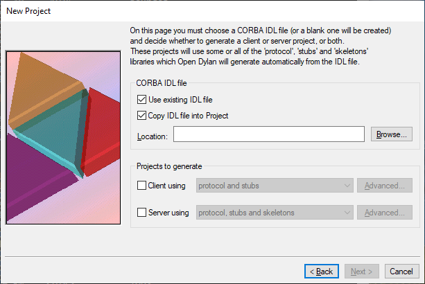

Creating CORBA Projects¶
About CORBA projects¶
CORBA projects, such as those we saw in previous examples, are just Dylan projects whose executable or DLL can operate as a CORBA server or client. Servers and clients built from CORBA projects use the Open Dylan ORB to communicate with other CORBA-based applications across an interface specified in OMG IDL.
The most noticeable distinction between a CORBA project and other projects is that a CORBA project contains a Open Dylan Tool Specification (spec) file which identifies an IDL file containing an IDL interface declaration.
Additionally, CORBA projects use protocol, stubs or skeletons projects that are generated from an IDL file. The combination of these generated projects used in a CORBA project depends on whether it is a server or client project. Automatic generation of client stubs and server skeletons from an IDL file is the standard way of providing a transparent native-language interface for writing clients and servers that can communicate with one another across an IDL interface using CORBA.
Creating CORBA projects¶
To create a CORBA project with the New Project wizard:
Choose from any window or click the New Project button in the main window.
If you chose from a project window, remember to uncheck the “Insert file into project?” box unless you intend your new project to be a subproject.
Select Project and click OK.
The New Project wizard appears.
In the Project Type section, select CORBA Client and/or Server and click Next.
The wizard’s CORBA options page appears.
Selecting an IDL file.¶
In the CORBA IDL file section, choose an IDL file on which to base the project.
The wizard copies the IDL file into the project folder which you choose on the next wizard page. If the IDL file is already in that folder, it is left there.
Alternatively, the wizard can generate a blank IDL file for you. Uncheck the “Use existing IDL file” to make that happen. The blank IDL file will be written into the project folder you choose on the next wizard page. The IDL file will have the same name as the project, with the extension
.idl.In the Projects to generate section, choose whether to generate a client or server project, or both.
The Advanced… button next to the client and server options produces a dialog containing several ORB-related options. See “Setting ORB options” on page 76 for details.
Click Next.
The next page is the standard wizard page for naming a project and specifying its location. (See Chapter 4 of Getting Started with Open Dylan for details.)
The project name you specify here is not used literally when the wizard creates the project or projects. Instead, if you chose to create a client project, the wizard creates a project called name
-client, where name is the project name you specified. If you chose to create a server project, the project will be called name-server.Similarly, the project folder you specify is used as the overall project folder name, with the project files and sources for clients and servers in subfolders of the appropriate name. For a project folder
phat, you get the following structure on disk (assuming you chose to create both client and server projects):phat\ client\ server\
If you chose to create a blank IDL file for your project by unchecking the “Use existing IDL file” box, your blank IDL file is created in the top-level project folder:
phat\ client\ server\ phat.idl
The client and server projects themselves are created in subfolders of the top-level project folder called
clientandserver.Enter a project name and location, and click Next.
The wizard moves on to the Use libraries page. This and the remaining wizard pages are as for ordinary projects.
Complete the remaining pages in the wizard to finish specifying the non-CORBA parts of your project or projects.
Note
If you choose to generate client and server projects, note that the project settings and library choices you make in the wizard will apply to both generated projects. If you want the two projects to have different settings or use different libraries, you must create both separately. The only exception to this is your choice of Advanced ORB Settings, which can be set differently for client and server projects in the “Projects to generate” section of the wizard’s CORBA options page. See “Setting ORB options” on page 76.
Note
The interface projects (that is, the client stubs, server skeletons, and protocol projects that provide a static interface to the main project’s IDL) are not generated until you first build your client or server project. When you do so, the IDL compiler is invoked and the necessary interface projects are created automatically. See “How the spec file affects IDL compilation” on page 80 for details of what projects are generated and where.
Setting ORB options¶
The Open Dylan ORB is supplied as a Dylan library called
dylan-orb, which both client and server CORBA projects use.
You can modify the default behavior of the ORB that a client or server project will run on while you are specifying the project in the New Project wizard. To set ORB options:
Click the appropriate Advanced… button on the New Project wizard’s CORBA options page.
A client and server can use different settings, so there are two Advanced… buttons: one for a server project and one for a client project.

The Advanced ORB settings dialog¶
The options you set in the Advanced ORB Settings dialog are translated into command-line arguments and added to the Command Line in the dialog’s Debug page. This command-line specification what is used to invoke the EXE or DLL for the project when you choose , Debug, or Interact. Thus, the Advanced ORB Settings arguments are passed to the server or client for use by the underlying ORB.
Note
Whether the ORB actually uses these settings is a different matter. Recall that, to initialize and gain an initial reference to an ORB, a client or server calls the
corba/orb-initmethod. (The name is as mapped to Dylan from the pseudo-IDLCORBA::ORB_initoperation.) If the client or server does not pass any arguments in this call, the ORB will use the arguments from the command-line. If some arguments are passed, those arguments will override the command-line arguments.
The options available are as follows.
- Trace ORB Operation
Turns on debug messages inside the ORB. These messages are mainly internal debugging messages, but may help you to understand what is going on inside the ORB, or help you report problems the Open Dylan maintainers.
Corresponds to the ORB command-line argument
-ORBtrace.- Suppress co-location optimization
Forces the ORB to always use sockets and IIOP for marshalling, even when it might have detected an in-process (that is, co-located) server that could be communicated with more directly.
Corresponds to the ORB command-line argument
-ORBno-co-location.- Debug server errors
Suppresses handling of application implementation errors in server code. That is, instead of the errors being translated into CORBA exceptions for transmission to the client, they are left unhandled in the server so that they can be debugged.
Corresponds to the ORB command-line argument
-ORBdebug.- Use alternative port number
Sets the default socket port for listening. The default port number registered with IANA for the Open Dylan ORB is 3672.
Corresponds to the ORB command-line argument
-ORBportport-number.
The role of spec files in IDL compilation¶
Open Dylan Tool Specification files, or spec files (extension:
.spec), allow tools other than the Dylan compiler to be invoked on
a project at build time. When the build encounters a spec file in a
project’s sources list, it examines its contents and invokes the tool
that the file specifies.
In the Open Dylan implementation, you can use spec files to call the Open Dylan IDL compiler, Scepter, on an IDL file. This compilation occurs during an ordinary project build, along with the compilation of Dylan source files.
Spec files are ASCII-format files that you can write or modify yourself. The following subsections describe the format for writing spec files for CORBA projects.
To arrange for IDL compilation to occur during an ordinary project
build, the spec file must be part of the project’s sources list. The
New Project wizard inserts a spec file into CORBA projects
automatically. The spec file has the same name as the project, with
the extension .spec.
The IDL compiler will not regenerate stubs, skeletons, or protocol
projects if they are up to date with respect to the IDL source
file. If a spec file is changed, this will force the IDL compiler to
regenerate code from the IDL source even if the IDL source itself has
not changed. This is necessary because some options in the spec file
may cause the generated code to change, for example the IDprefix:
keyword.
Including the spec file in the project is useful because it brings all the build work for a CORBA project together into a single build. Also, by bringing the IDL file for the project under the control of Open Dylan’s project management system, you no longer have to worry about keeping the client stubs, server skeletons and protocol libraries up to date with any changes to the IDL – Open Dylan takes care of that.
How the spec file affects IDL compilation¶
As we have seen in previous chapters, the IDL compiler is capable of generating client stubs, server skeletons, and protocol support projects from an IDL file. When there is a spec file in the project being compiled, any projects the IDL compiler generates automatically become subprojects of the main project.
This automatic inclusion only occurs because of the spec file in the project. If you compiled the IDL file separately, using the IDL compiler on the command line (see Chapter 9, “Using the Dylan IDL Compiler”) the generated projects would not be made subprojects. You would have to add them to the main project by hand in order to make them subprojects.
By default, the generated projects are placed in subfolders of the folder containing the IDL file. If you used the New Project wizard to create the project you are compiling, and you chose to generate a blank IDL file (by unchecking the “Use existing IDL file” box), the IDL file will have been generated in the top-level project folder, and thus the IDL compiler will put any projects it generates in subfolders of the top-level project folder. This very conveniently puts all subprojects associated with your main project under one folder.
Again by default, the subproject folders are named protocol,
stubs and skeletons. There are spec file options which allow
some control over what the subfolders are called and also where they
are located.
Header information for CORBA spec files¶
The first line of any spec file must contain the Origin:
keyword. For describing IDL source files to CORBA projects, the value
of this keyword must be OMG-IDL. Thus the first line of a spec
file for IDL must be:
Origin: OMG-IDL
Also required in the header of this kind of spec file is the keyword
IDL-file:, with a value that is a pathname for the IDL file that
is to be compiled. The pathname is interpreted relative to the folder
containing the spec file. As noted in Section 7.4.1, the folder
containing the IDL file will be used to store any projects generated
automatically from the IDL.
Note that a spec file can describe only one IDL file. However, projects can contain more than one spec file.
For example, this is the minimum spec file for describing an IDL file
called bank.idl that is in the folder bank, a sibling folder
of the folder containing the spec file.
Origin: OMG-IDL
IDL-file: ..\bank\bank.idl
Server keywords for CORBA spec files¶
To indicate that the CORBA project contains a server implementation
for the IDL file, use the keyword Skeletons: with the value
yes.
Skeletons: yes
This ensures that Scepter generates a server skeletons project from the IDL source. The server skeletons project is automatically made a subproject of the CORBA project.
Client keywords for CORBA spec files¶
To indicate that the CORBA project is a client of the service
described by the IDL file, use the keyword Stubs: with the value
yes. This ensures that Scepter compiler generates a client stubs
project from the IDL source. The client stubs project is automatically
made a subproject of the CORBA project.
Stubs: yes
Sometimes, the CORBA client also needs to use the server skeletons
code generated from the IDL source; for example, where the IDL defines
a callback interface which the client must implement. In this case,
you should also include the Skeletons: keyword in the spec file
with the value yes.
Stubs: yes
Skeletons: yes
Other keywords for CORBA spec files¶
The following keywords control other aspects of IDL compilation.
directory:directoryBy default the IDL compiler puts the Dylan projects it generates into subdirectories/subfolders in the same directory/folder as the IDL source file. You can force it to put the subdirectories/subfolders in another elsewhere using this option.
The directory can be an absolute or relative name. Relative names are resolved with respect to the directory/folder the spec file is in.
prefix:directory-prefixThe default names for the generated subdirectories/subfolders are
protocol,stubs, andskeletons.You can specify a prefix for these names with this
prefix:option. The prefix will be appended with a leading - character.This might be useful when you want to put the project subdirectories/subfolders from more than one IDL file in a common location.
include:directoryAdds directory to the search path list which the preprocessor uses to find files mentioned in
#includedirectives.The directory can be an absolute or relative name. Relative names are resolved with respect to the directory/folder the spec file is in.
case:yes|noBy default the IDL compiler ignores case when recognising keywords and identifiers, but when this option is set to
yes, the characters in identifiers and keywords must have exactly the same case as the identifier or keyword definition in order to be recognized.Default value:
no.clean:yes|noIf
yes, forces the IDL compiler to regenerate code irrespective of whether or not it thinks any generated code that exists is up to date with respect to the IDL source file.Default value:
no.protocol: yes | noIf
yes, this option will ensure the IDL compiler generates the protocol library from the IDL source. The protocol project will be added as a subproject of the CORBA project. This option should be used by projects that wish to use the Dylan framework generated from the IDL source but not the stubs or skeletons code.Default value:
no.
Using IDL for non-CORBA work¶
By default, when Scepter generates a stubs or skeletons project from an IDL file, it also generates a protocol project. The protocol project contains Dylan code mapped directly from the IDL file: open generic functions and open classes. The protocol project does not contain any low-level CORBA marshalling code, which is left to the stubs and skeletons projects.
Thus the protocol project contains a pure Dylan protocol for implementing a piece of software according to an IDL contract. This can be useful for projects wishing to make use of the protocol without necessarily using an ORB for communication. For example, an application team might want to introduce the discipline of an IDL description early on in the project lifecycle so that development work on the clients and servers can proceed in parallel using dummy local implementations of the other components.
To have Scepter generate a protocol project only, choose the
appropriate option in the Projects to Generate area of the New Project
wizard’s CORBA options page. Alternatively, after the project has been
created you can modify the its spec file to use the Protocol:
keyword with the value yes. Scepter will ensure the protocol
project is generated, but will not generate the stubs or skeletons
projects unless the Stubs: or Skeletons: keywords are also
present and have the value yes.
The protocol project is automatically made a subproject of the CORBA project.